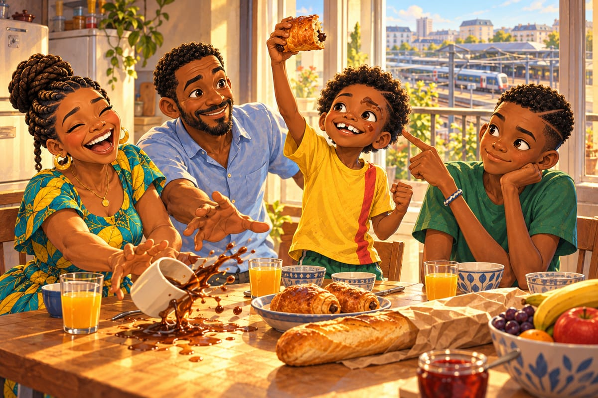

Avant de recevoir, tu regardes
« BriBri. Il y en a DEUX. »
Kaydoudou s'assoit d'un coup sur une marche de l'escalier. Il tient son pain au chocolat ouvert à deux mains, comme un oisillon tombé du nid.
« Deux barres de chocolat. Pas une. Deux. »
BriBri, trois marches plus haut, la baguette sous le bras, attend la suite. Avec Kaydoudou, il y a toujours une suite.
« Quelqu'un, dans ce pays, s'est dit : une seule barre, c'est triste. Mettons-en deux. Tu te rends compte ? Quelqu'un a pensé à nous. »
« Il ne te connaissait pas. »
« Il me connaissait dans son cœur. »
« Mange-le, au lieu de lui parler. »
« Pas tout de suite. D'abord, je le regarde. »
C'est leur premier matin en France. Papa les a envoyés chercher le pain.
« Tu as vu la dame ? dit Kaydoudou. Des joues de brioche ! De la farine jusque dans les sourcils ! »
« J'ai vu. Et elle a parlé, et j'ai tout compris. Sans chercher. »
En Amérique, chaque phrase était un mur à escalader. Ici, la langue est une porte ouverte. Devant la vitrine, ses yeux ont piqué. Il a fait semblant que c'était la chaleur du four.
« Moi aussi, j'ai tout compris, dit Kaydoudou. Mais ça, c'est normal. Le pain au chocolat, ça, ce n'est pas normal. »
Il en parle pendant tout le petit déjeuner.
« Ça fait un bruit de feuilles mortes, Papa. Mais des feuilles mortes qui se mangent. »
« Ah bon ? » dit Papa.
« Et il faut manger le bout sans chocolat en premier, Maman. Comme au foot : on garde le but pour la fin. »
« Très logique », dit Maman.
« Papa, pourquoi tu nous as caché ça pendant onze ans ? »
« Je gardais la surprise. »
« Il faut écrire à Mami. Le njangi des femmes doit ouvrir une boulangerie à Bafoussam. »
« Avec un mois d'argent de poche, on peut en acheter… » Il compte sur ses doigts. Il devient tout pâle. « Pas assez. Jamais assez. »
« Tu as du chocolat sur le sourcil », dit BriBri.
« Je sais. Je le garde pour plus tard. »
Maman rit si fort qu'elle renverse son café. Kaydoudou lève son pain au chocolat comme une coupe.

« Un pays qui invente ça, son foot doit être magique. Il faut qu'on trouve une équipe, BriBri. Vite. »
Et cette fois, pense BriBri, je comprendrai chaque mot du coach.
Le balcon de leur troisième étage donne sur la gare. Toutes les dix minutes, un RER A entre en soufflant, long comme une rue et haut de deux étages.
« Le train-immeuble ! » crie Kaydoudou chaque fois.
Papa installe les réseaux d'une banque, à La Défense. Maman a acheté un classeur neuf.
« Troisième pays, troisième diplôme ! »
Le premier soir, BriBri ouvre le carnet à une page blanche. Tout en haut, il écrit : France. Il reste longtemps le crayon en l'air. Qu'est-ce que ce pays va lui apprendre ?
À la rentrée, au collège, les frères découvrent un truc bizarre : on peut parler la même langue sans la parler pareil.
« En maths, j'ai roulé les r, comme à Douala, raconte BriBri le soir. Deux filles ont pouffé de rire. »
« Elles étaient méchantes ? » demande Maman.
« Non. Mais je suis devenu tout rouge. »
« Moi, j'ai dit “On dit quoi, monsieur ?” à mon professeur principal, annonce Kaydoudou. Il a répondu “Euh… Bonjour, jeune homme ?” Toute la classe a rigolé. Lui aussi. Alors j'ai salué, comme un artiste. »
Puis il passe à la langue d'ici.
« Ici, oui, ça se dit “ouais”. Très, ça se dit “grave”. Et bizarre, ça se dit “chelou”. »
« Chelou ? » répète Papa.
« C'est le mot le plus chelou du monde. » Il prend une voix traînante, le menton dans la main. « Ouais, nan, mais genre, c'est grave chelou, quoi. »
« Ne te moque pas », dit Maman, qui rit.
« Je ne me moque pas. J'apprends la langue. » Il se tourne vers son frère. « Et à la récré, ils t'appellent “Bri”. Ils disent que BriBri, c'est deux fois la même chose, et qu'une fois suffit. »
« Toi, ne commence pas. »
« Bri. »
Papa pose sa fourchette.
« Le collège a une section sport-études avec un club, l'Étoile Sportive de Marne. L'ESM. Ceux qu'ils choisissent finissent les cours plus tôt et vont s'entraîner en RER. » Il sourit. « J'ai appelé. Essai mercredi. »
Kaydoudou fait tomber sa chaise.
Dans le RER, le mercredi, il ne tient pas en place.
« Et s'il ne nous prend pas ? »
« Il nous prendra. »
« Et s'il prend juste toi ? »
« Alors je dirai non. »
Kaydoudou le regarde, et il se calme d'un coup.
Le centre de l'ESM est au bord de la Marne. Trois terrains synthétiques, un bâtiment blanc avec une grande étoile, des péniches qui glissent sur l'eau. Une trentaine de garçons attendent le long de la main courante, la barrière autour du terrain. Kaydoudou est le plus petit de tous.
À seize heures pile, sous un soleil déjà doré, Monsieur Bertrand Lacombe arrive.
Survêtement bleu marine. Sifflet en métal au bout d'un lacet. Et une moustache grise, épaisse, taillée net comme une brosse à chaussures.
Il ne dit pas bonjour.
« Chasubles. Huit contre huit. On garde le ballon. Allez. »
« Il a oublié de dire bonjour », chuchote Kaydoudou.
« Chut. »
BriBri enfile une chasuble orange par-dessus son vieux maillot vert, le 8 au col blanc de Bonamoussadi et de Waldorf. Kaydoudou vérifie ses chaussettes, une rouge, une jaune, et se met à sautiller.
Très vite, BriBri remarque une chose : Lacombe ne félicite jamais personne. Un grand garçon réussit un lob magnifique, par-dessus deux défenseurs.
« Suivant », dit Lacombe.
Un autre fait trois jongles avant de passer.
« Pourquoi ? »
Le garçon ne sait pas quoi répondre.
« Il ne dit jamais bravo ? » souffle Kaydoudou.
« Jamais, on dirait. »
Puis le premier ballon arrive pour BriBri. Une passe propre, au sol. Il regarde le ballon venir et l'amortit sous sa semelle, face à son propre but. Un contrôle parfait. Poli, comme on dit bonjour à une dame.
Un pied surgit dans son dos. Le ballon disparaît.
BriBri se retourne. Trop tard. Un garçon aux boucles brunes et aux crampons très blancs file déjà avec le ballon.
« Merci ! » lance le garçon, sans se retourner.
Le sifflet déchire l'air. Monsieur Lacombe, le sifflet aux lèvres, lève une main pour arrêter le jeu. Au fond, Kaydoudou reste figé sur la pointe des pieds, la bouche ouverte.
Lacombe s'approche. Lentement.
« Avant de recevoir, tu as regardé où ? »
BriBri cherche dans sa tête. Il n'y a rien. Seulement le ballon, rond, qui grossissait.
« Je… »
« Nulle part. Tu as regardé le ballon. Le ballon, il sait où il est, mon garçon. C'est toi qui ne savais pas où tu étais. »
Lacombe lève les yeux vers les trente garçons.
« Avant de recevoir, tu regardes. Toujours. »
Il siffle la reprise, comme si rien ne s'était passé. Sauf pour BriBri, qui a les joues en feu.
Je comprends chaque mot, pense-t-il. Et je n'ai pas su répondre.
Kaydoudou passe à côté de lui en trottinant.
« Ça va, mola ? »
« Non. »
« Il est méchant ? »
« Non. Il a raison. À Waldorf, je comptais les lignes depuis le banc. Mais ici, avec quelqu'un dans le dos, je ne vois que le ballon. »
« Comme les papillons de nuit sur l'ampoule de la véranda », dit Kaydoudou.
C'est exactement ça.
Alors il observe le garçon aux boucles. Avant chaque ballon, le garçon tourne la tête, une fois, deux fois, très vite, comme une mésange sur une branche. Quand le ballon arrive, il sait déjà. Il ne réfléchit pas : il joue.
La mésange, pense BriBri.
Il essaie. Trop tard : le ballon lui rebondit sur le tibia. Il essaie encore. Cette fois, il voit tout, et il est si occupé à voir qu'il oublie de contrôler.
Plus loin, Kaydoudou dribble trois garçons d'affilée, magnifique, et fonce droit dans un quatrième qu'il n'a pas vu. Boum.
« Le petit ! crie Lacombe. Tu dribbles des gens que tu n'as pas vus. Ça s'appelle de la chance. Pas du football. »
Kaydoudou hausse les épaules, les oreilles toutes rouges.
« Dernière minute ! » crie Lacombe.
Le ballon est chez un défenseur, loin.
BriBri n'y pense même pas. Sa tête tourne toute seule.
Une fois. Clic. Deux chasubles jaunes, et un trou entre elles.
Deux fois. Clic. Derrière le trou, Kaydoudou. Seul.
Le ballon arrive. Les cris des autres s'effacent. Il n'y a plus que la photo dans sa tête.
Une touche. Une seule.
Le ballon file dans le trou, et Kaydoudou n'a qu'à courir.
Lacombe ne dit rien. Il sort de sa poche un petit carnet à spirale et note quelque chose avec un crayon minuscule.
Après l'essai, Kaydoudou rejoint son frère près de la main courante.
« C'était quoi, ce truc avec ta tête ? Tu avais un moustique ? »
« La mésange. »
« La quoi ? »
« Un petit oiseau. Il regarde partout avant de bouger. »
« Toi, un petit oiseau ? Tu es trop grand. Tu es une autruche. »
« Une autruche qui voit tout. »
Lacombe s'arrête devant Papa. BriBri tend l'oreille.
« Vous êtes le papa ? Le grand a de la tête. Le petit a de la magie. »
Papa sourit.
« Aucun des deux n'a encore d'yeux. »
Le sourire de Papa reste en l'air, un peu perdu.
« Des yeux ? »
« Les yeux, ça s'apprend. La tête et la magie, beaucoup moins. » Lacombe regarde son carnet. « Section sport-études. Le grand chez les U14. Le petit avec lui, surclassé. Deux ans de moins que les autres, une tête de moins. Mais il va vite. Ici, les U13 et les U14 de la section s'entraînent ensemble, avec moi. Mardi, seize heures. Pas une minute de retard. »
« On sera là », dit Papa.
Il est déjà reparti quand Kaydoudou comprend. Il pousse un cri, court jusqu'au poteau de corner le plus proche et commence la danse de Roger Milla.
« Et pas de danse sur mes poteaux de corner », dit la voix de Lacombe, de très loin.
Kaydoudou se fige, une jambe en l'air.
« Comment il a vu ? chuchote-t-il. Il a des yeux derrière la tête ! »
Papa doit s'accroupir pour cacher son fou rire.
Le mardi suivant, dans le vestiaire, un garçon est assis tout seul dans un coin. Cheveux couleur de paille, joues rouges, mains énormes sur les genoux. Il parle si doucement que Kaydoudou doit répéter « Pardon ? » trois fois.
« Lucas. Lucas Morel. Latéral droit. »
« Tu viens d'où ? »
« D'une ferme, dans la Brie. Mon père fait du blé et des betteraves. »
Lucas sort une pomme de son sac, la casse en deux à mains nues et en tend une moitié à Kaydoudou. Kaydoudou la prend comme on reçoit une médaille.
« Tu peux casser des noix de coco, aussi ? »
« Je ne sais pas. On n'en a pas. »
« Moi, c'est Kaydoudou. Ailier. Lui, c'est mon frère, BriBri. Il ne parle pas beaucoup. »
« Moi non plus », dit Lucas.
« Alors je parlerai pour nous trois. »
La porte s'ouvre. Les voix baissent d'un coup. Le garçon aux boucles brunes entre, ses crampons blancs à la main. Il marche comme si le vestiaire lui appartenait.
« Salut, Kenzo », disent plusieurs voix.
Il répond d'un signe du menton.
« Kenzo Delattre, souffle Lucas. Treize ans. Le meilleur de l'équipe. Il le sait. »
Kenzo pose son sac à côté de celui de BriBri. Ses yeux glissent sur le vieux maillot vert, sur le col blanc, sur le chiffre délavé dans le dos. Un petit sourire en coin. Pas vraiment gentil.
« Joli maillot. »
Puis, en passant devant lui, sans même ralentir :
« Mais ici, le 8, c'est moi. »
BriBri ne répond pas. Au fond de son sac, il trouve la couverture de pagne du carnet de Tonton Fokou. Il la serre si fort que le tissu se froisse entre ses doigts.
Le 8. Son numéro. Depuis la terre rouge de Bonamoussadi.
Et ici, quelqu'un d'autre le porte.